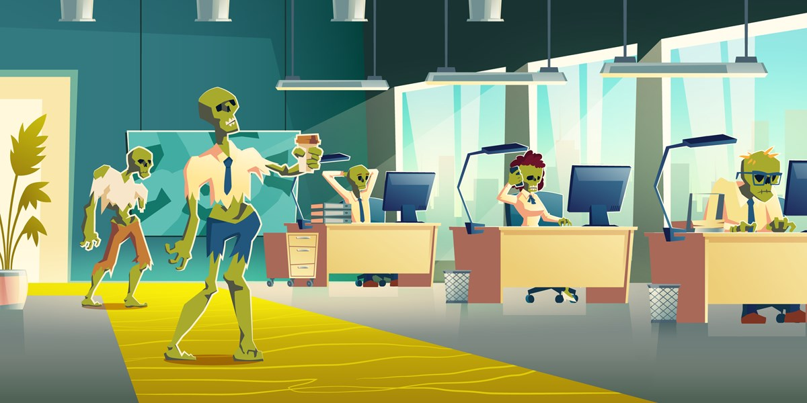

Do you feel more like a zombie than a human? Us too!

Credits: Laura Williams from FEE Stories
In our work-centric culture, many feel like zombies, drained by the constant grind. "Zombivive Your Reality" offers a solution. It's a website dedicated to helping people break free from the monotony of work life, providing tips and resources for reclaiming vitality and finding balance. Through mindfulness and self-care, it aims to revitalize lives and foster a more fulfilling existence beyond the daily grind.